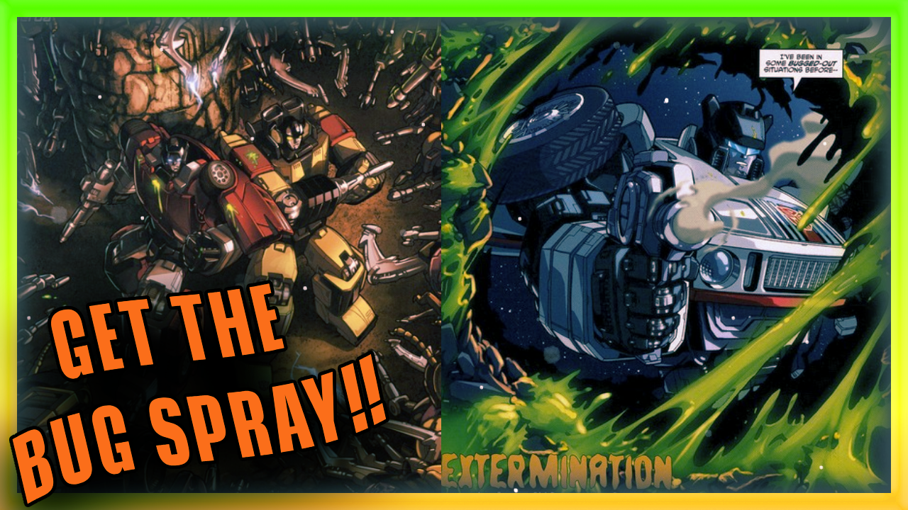
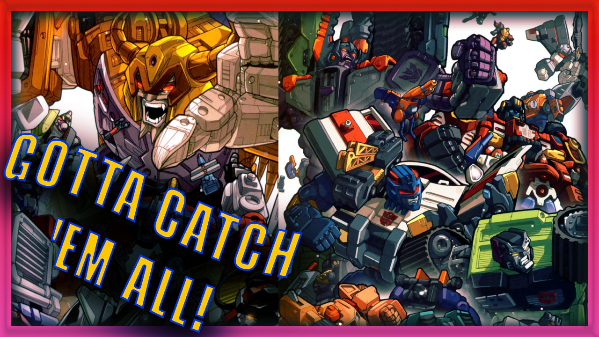
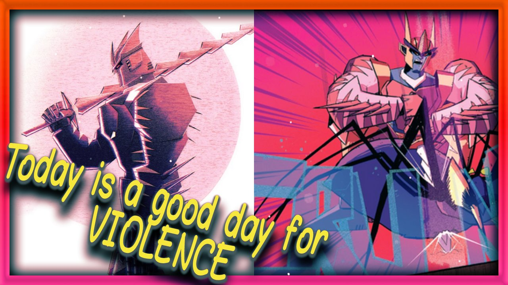
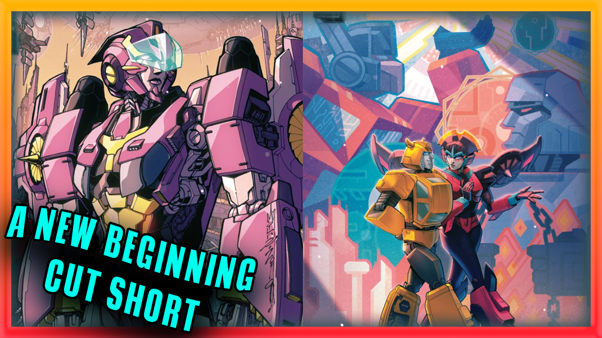
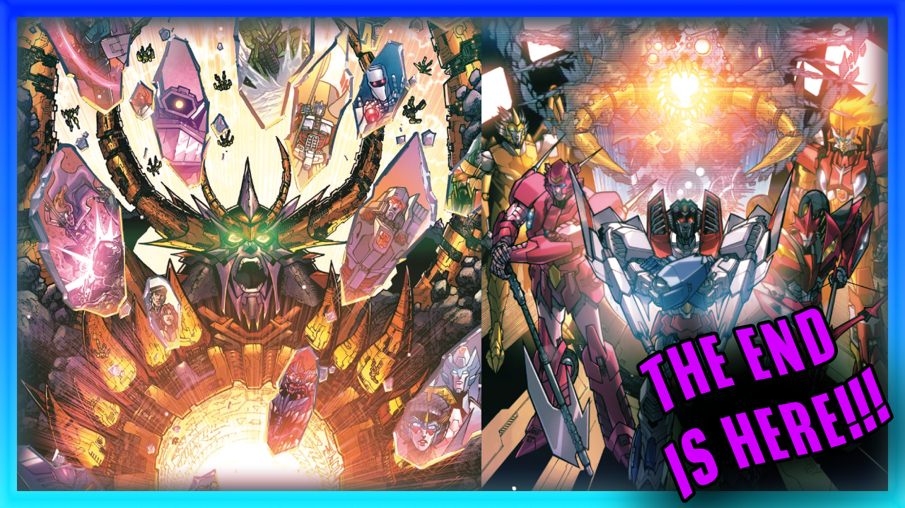
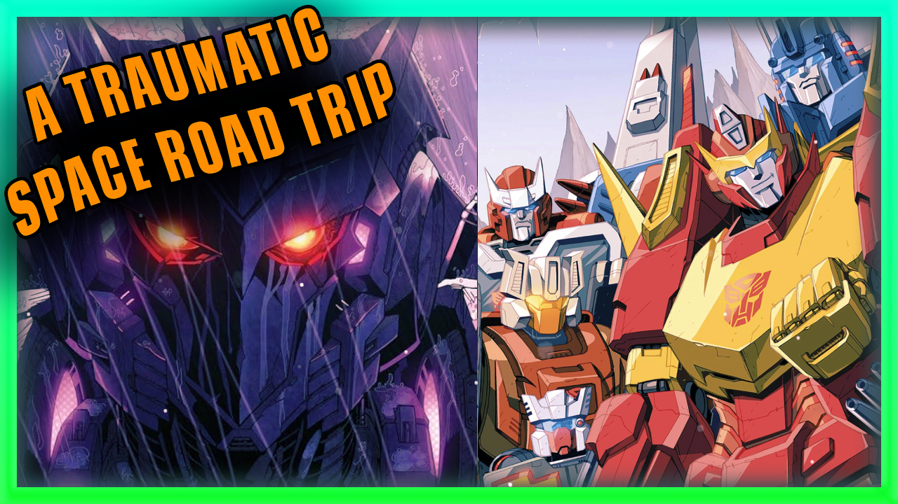
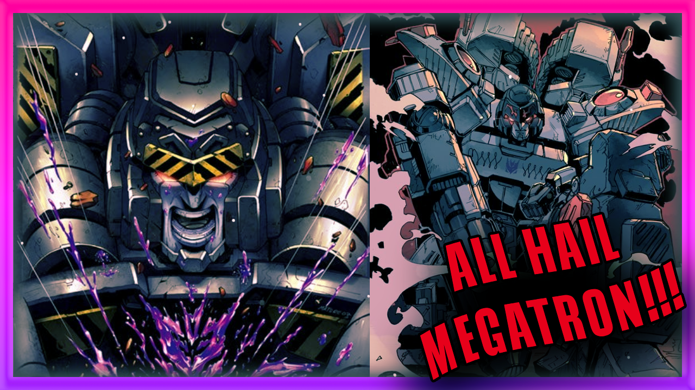
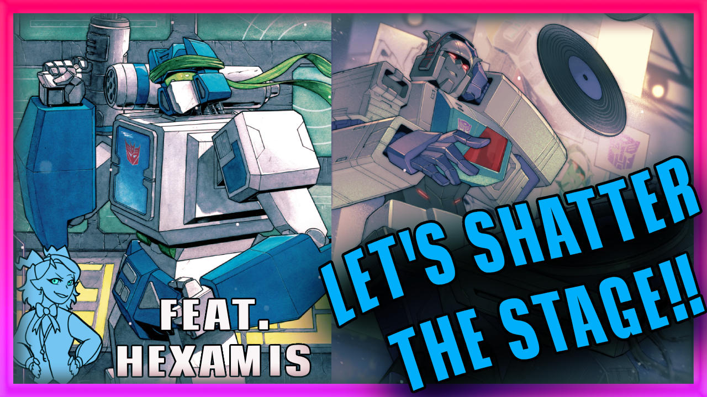

ABOUT
Come join Onyx, Clickbait, and Killobyte as they dive into the world of Transformers comics.
Throughout their journey they'll discuss plots, summarizes, theories, fun facts, and rate each comic!
SEASON 6
The Transformers The Manga
It's the 1985 spin off tie in series of The Transformers cartoon taking place in Japan. A new human ally joins the fray as Kenji joins the Autobots in order to defend Tokyo from the Decepticons. What wacky and silly adventures await Kenji Tun in and find out!
Episodes
SEASON 5

Dreamwave Generation 1
It's the 2002 Dreamwave comics, The transformers have been missing for several years after the explosion of the Ark 2 But suddenly Megatron and a few autobots return, attacking an oil rig. Did they survive the explosion? Are the humans still in danger? Where is Optimus? And why are there autobots helping the decepticons? All of these questions will hopefully be answered in these episodes.
EpisodesDreamwave Armada Trilogy
Based off the famouse cartoon of the same name in 2002, The decepticons make the first move in their plan to rule over cybertron and that involves enslaving the Mini-Cons.
Episodes

IDW Beast Wars
BEAST WARS! We are joined with special guest Lapis as we discus this 2021 series. Optimus Primal and his crew pursue a group of Predacon criminals across time and space to recover a stolen relic, and find themselves stranded on a mysterious planet.
EpisodesSEASON 4
IDW 2019 Transformers
The last series to come out of IDW publishing, Cybertron is a utopia, a living mechanical planet that's full of opportunities for a recently forged 'bot named Rubble. But as Bumblebee and Windblade show Rubble what his life could be, they discover something troubling.
Episodes
SEASON 3

IDW 2005 Phase 3 Comics
It's the last stretch of the famous IDW 2005 Continuity! A face from the past returns to Cybertron, and does not like what the planet has become. The Autobots' visit to Functionalist Cybertron comes to an end, but not everyone makes it out alive Personal conflicts must be set aside as the threat of Unicron looms over the Earth.
EpisodesSEASON 2
IDW 2005 Phase 2 Comics
We start off with the Death of Optimus Prime and now witness the power vacuum take shape amongst the surviving Decepticons. We explore the undead universe, the autobots and deceptions unit as shockwaves unleashes his master plan. Rodimus and his stranded comrades weigh their options as the D.J.D. close in.
Episodes
SEASON 1

IDW 2005 Phase 1 Comics
Witness the origin of Megatron, and the very first encounter Cybertronians have with Earth. The start of the Autobot and Decepticon civil war that spans millions of years, and the true terror of Megatrons Might!
EpisodesBonus Episodes

Transformers Crossover Comics & Stand Alone Mini-Series
These are special episodes the covers crossover comics spanning from The Terminator Vs The Transformers to Transformers X Ghostbusters. And special stand alone series or alternative "What If's" such as King Grimlock, Deviations, Shattered Glass, and Last Bot Standing!
Episodes